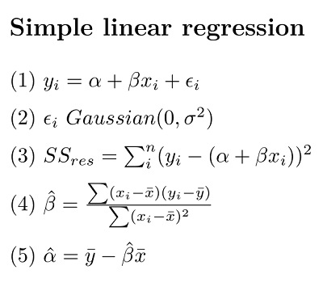
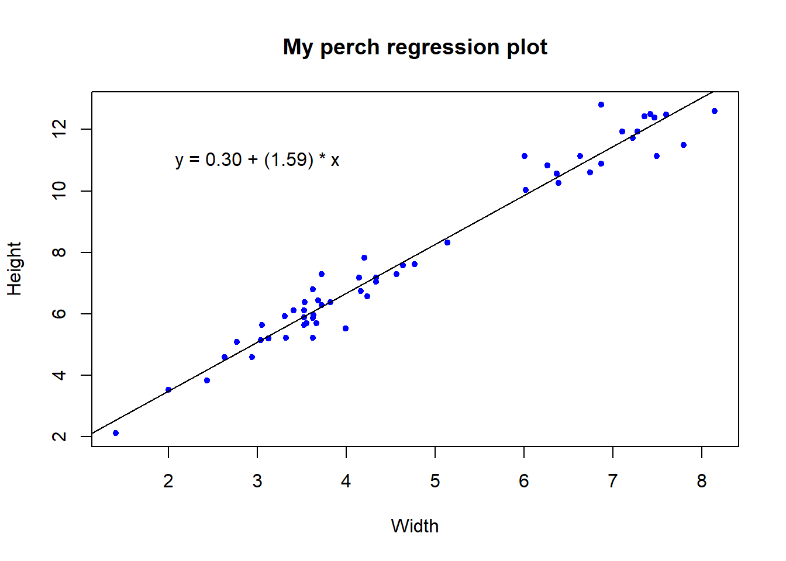
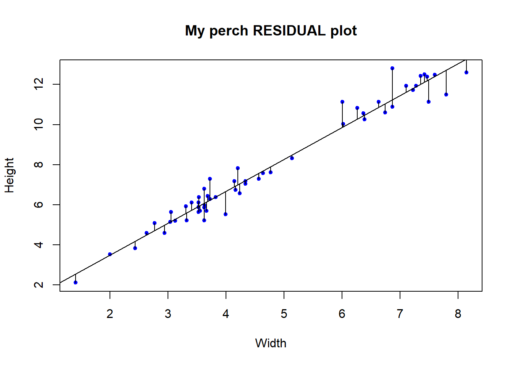
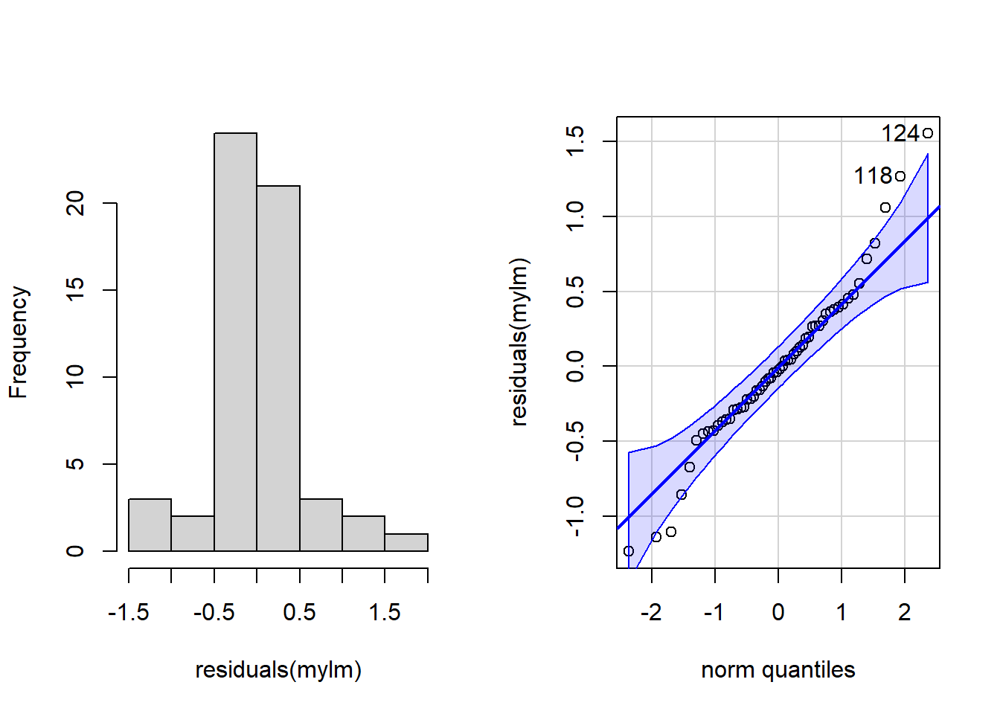
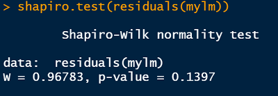
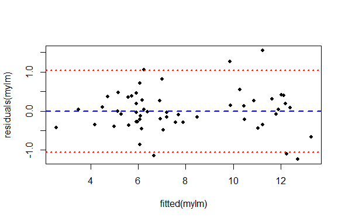

library(openxlsx)
# NB your file may be in a different location to mine!
fish <- read.xlsx('data/10-fish.xlsx')10 Regression

1 Regression to the mean
“The general rule is straightforward but has surprising consequences: whenever the correlation between two scores is imperfect, there will be regression to the mean.”
- Francis Galton
One of the most common and powerful tools in the statistical toolbox is linear regression. The concept and basic toolset was created in conjunction with investigating the heritable basis of resemblance between children and their parents (e.g. height) by Francis Galton.
Exemplary of one of the greatest traditions in science, a scientist identified a problem, created a tool to solve the problem, and then immediately shared the tool for the greater good. This is a slight digression from our purposes here, but you can learn more about it here:
1.1 Objectives
The question of simple regression
Data and assumptions
Graphing
Test and alternatives
Practice exercises
2 The question of simple regression
The essential motivation for simple linear regression is to relate the value of a numeric variable to that of another variable. There may be several objectives to the analysis:
Predict the value of a variable based on the value of another
Quantify variation observed in one variable attributable to another
Quantify the degree of change in one variable attributable to another
Null Hypothesis Significance Testing for aspects of these relationships
2.1 A few definitions

Equation (1) is the classic linear regression model. (NB, here we make a distinction between the equation representing the statistical model, and the R formula that we will use to implement it)
\(\alpha\) (alpha, intercept) and \(\beta\) (beta, slope) are the so-called regression parameters
yandxare the dependent and predictor variables, respectively\(\epsilon\) (epsilon) represents the “residual error” (basically the error not accounted for by the model)
Equation 2 is our assumption for the residual error
- Gaussian with a mean of 0 and a variance we estimate with our model
Equation 3 is our sum of squares (SS) error for the residuals
- the variance of residuals is the SSres/(n-2), where
nis our sample size
Equation 4 \(\hat\beta\) is our estimate of the slope
Equation 4 \(\hat\alpha\) is our estimate of the intercept
3 Data and assumptions
We will explore the simple regression model in R using the Kaggle fish market dataset.
# Download the fish data .xlsx file linked above and load it into R
# (I named my data object "fish")
# Try this:
names(fish)[1] "Species" "Weight" "Length1" "Length2" "Length3" "Height" "Width" table(fish$Species)
Bream Parkki Perch Pike Roach Smelt Whitefish
35 11 56 17 20 14 6 # slice out the rows for Perch
fish$Species=="Perch" #just a reminder [1] FALSE FALSE FALSE FALSE FALSE FALSE FALSE FALSE FALSE FALSE FALSE FALSE
[13] FALSE FALSE FALSE FALSE FALSE FALSE FALSE FALSE FALSE FALSE FALSE FALSE
[25] FALSE FALSE FALSE FALSE FALSE FALSE FALSE FALSE FALSE FALSE FALSE FALSE
[37] FALSE FALSE FALSE FALSE FALSE FALSE FALSE FALSE FALSE FALSE FALSE FALSE
[49] FALSE FALSE FALSE FALSE FALSE FALSE FALSE FALSE FALSE FALSE FALSE FALSE
[61] FALSE FALSE FALSE FALSE FALSE FALSE FALSE FALSE FALSE FALSE FALSE FALSE
[73] TRUE TRUE TRUE TRUE TRUE TRUE TRUE TRUE TRUE TRUE TRUE TRUE
[85] TRUE TRUE TRUE TRUE TRUE TRUE TRUE TRUE TRUE TRUE TRUE TRUE
[97] TRUE TRUE TRUE TRUE TRUE TRUE TRUE TRUE TRUE TRUE TRUE TRUE
[109] TRUE TRUE TRUE TRUE TRUE TRUE TRUE TRUE TRUE TRUE TRUE TRUE
[121] TRUE TRUE TRUE TRUE TRUE TRUE TRUE TRUE FALSE FALSE FALSE FALSE
[133] FALSE FALSE FALSE FALSE FALSE FALSE FALSE FALSE FALSE FALSE FALSE FALSE
[145] FALSE FALSE FALSE FALSE FALSE FALSE FALSE FALSE FALSE FALSE FALSE FALSE
[157] FALSE FALSE FALSEperch <- fish[fish$Species=="Perch" , ]
head(perch) Species Weight Length1 Length2 Length3 Height Width
73 Perch 5.9 7.5 8.4 8.8 2.1120 1.4080
74 Perch 32.0 12.5 13.7 14.7 3.5280 1.9992
75 Perch 40.0 13.8 15.0 16.0 3.8240 2.4320
76 Perch 51.5 15.0 16.2 17.2 4.5924 2.6316
77 Perch 70.0 15.7 17.4 18.5 4.5880 2.9415
78 Perch 100.0 16.2 18.0 19.2 5.2224 3.32163.1 Assumptions
The principle assumptions of simple linear regression are:
Linear relationship between variables
Numeric continuous data for the dependent variable (
y); numeric continuous (or numeric ordinal) data on the for the predictor variable (x)Independence of observations (We assume this for the different individual Perch in our data)
Gaussian distribution of residuals (NB this is not the same as assuming the raw data are Gaussian! We shall diagnose this)
Homoscedasticity (this means the residual variance is approximately the same all along the
xvariable axis - we shall diagnose this)
4 Graphing
The traditional way to graph the simple linear regression is with a scatterplot, with the dependent variable on the y axis and the predictor variable on the x axis. The regression equation above can be used to estimate the line of best fit for the sample data, which is predicted value of y. Thus, prediction is one of the functions here (as in predicting the value of y given a certain value of x if there were to be further data collection). This regression line is often incorporated in plots representing regression.
The simple regression function in R is lm() (for linear model). In order to estimate the line of best fit and the regression coefficients, we will make use of it.
# Try this:
# A simple regression of perch Height as the predictor variable (x)
# and Width as the dependent (y) variable
# First make a plot
plot(y = perch$Height, x = perch$Width,
ylab = "Height", xlab = "Width",
main = "My perch regression plot",
pch = 20, col = "blue", cex = 1)
# Does it look there is a strong linear relationship
# (it looks very strong to me)
# In order to draw on the line of best fit we must calculate the regression
# ?lm
# We usually would store the model output in an object
mylm <- lm(formula = Height ~ Width, # read y "as a function of" x
data = perch)
mylm # NB the intercept (0.30), and the slope (1.59)
Call:
lm(formula = Height ~ Width, data = perch)
Coefficients:
(Intercept) Width
0.2963 1.5942 # We use the abline() function to draw the regression line onto our plot
# NB the
# ?abline
abline(reg = mylm) # Not bad
# Some people like to summarize the regression equation on their plot
# We can do that with the text() function
# y = intercept + slope * x
# ?text
text(x = 3, # x axis placement
y = 11, # y axis placement
labels = "y = 0.30 + (1.59) * x")
4.1 Testing the assumptions
The data scientist must take responsibility for the assumptions of their analyses, and for validating the statistical model. A basic part of Exploratory Data Analysis (EDA) is to formally test and visualize the assumptions. We will briefly do this in a few ways.
Before we begin, it is important to acknowledge that this part of the analysis is subjective and it is subtle, which is to say that it is hard to perform without practice. As much as we wish that Null Hypothesis Significance Testing is totally objective, the opposite is true, and the practice of data analysis requires experience.
Here, we will specifically test two of the assumption mentioned above, that of Gaussian residual distribution, and that of homoscedasticity. We will examine both graphically, and additionally we will formally test the assumption of Gaussian residuals.
To start with, let’s explicitly visualize the residuals. This is a step that might be unusual for a standard exploration of regression assumptions, but for our purposes here it will serve to be explicit about what the residuals actually are.
## Test assumptions ####
# Try this:
# Test Gaussian residuals
# Make our plot and regression line again
plot(y = perch$Height, x = perch$Width,
ylab = "Height", xlab = "Width",
main = "My perch RESIDUAL plot",
pch = 20, col = "blue", cex = 1)
abline(reg = mylm)
# We can actually "draw on" the magnitude of residuals
arrows(x0 = perch$Width,
x1 = perch$Width,
y0 = predict(mylm), # start residual line on PREDICTED values
y1 = predict(mylm) + residuals(mylm), # length of residual
length = 0) # makes arrowhead length zero (or it looks weird here)
Note the residuals are perpendicular the the x-axis. This is because residuals represent DEVIATION of each OBSERVED y from the PREDICTED y for a GIVEN x.
The Gaussian assumption is that relative to the regression line, the residual values should be, well, Gaussian (with mean of 0 and a variance we estimate)! There should be more dots close to the line with small distance from the regression line, and few residuals farther away
4.2 Closer look at the residual distribution
Remember how we visually examine distributions? With a frequency histogram and possibly a q-q plot right? Here we will do those for a peek, but we will also add a formal, objective test of deviation from normality. This part of exploratory data analysis is subtle and requires experience (i.e. it is hard), and there are many approaches. Our methods here are a starting point.
# residual distribution
# Try this:
library(car) # for qqPlot()Loading required package: carDatapar(mfrow = c(1,2)) # Print graphs into 1x2 grid (row,column)
hist(residuals(mylm), main = "")
qqPlot(residuals(mylm))
124 118
52 46 par(mfrow = c(1,1)) # Set back to 1x14.3 Diagnosis - take 1
The histogram is “shaped a little funny” for Gaussian
Slightly too many points in the middle, slightly too few between the mean and the extremes in the histogram
Very slight right skew in the histogram
Most points are very close to the line on the q-q plot, but there are a few at the extremes that veer off
Two points are tagged as outliers a little outside the error boundaries on the q-q plot (rows 118 and 124, larger than expected observations)
4.4 Diagnosis - take 2
It is your job as a data scientist to be skeptical of data, assumptions, and conclusions. Do not pussyfoot this.
It is not good enough to merely make these diagnostic graphs robotically; the whole point is to judge whether the the assumptions have been violated. This is important (and remember, hard) because if the assumptions are not met it is unlikely that the dependent statistical model is valid. Here, we can look a little closer at the histogram and the expected Gaussian distribution, and we can also perform a formal statistical test to help us decide.
## Gussie up the histogram ####
# Make a new histogram
hist(residuals(mylm),
xlim = c(-2, 2), ylim = c(0,.9),
main = "",
prob = T) # We want probability density this time (not frequency)
# Add a density line to just help visualize "where the data are"
lines( # lines() function
density(residuals(mylm)), # density() function
col = "green4", lty = 1, lwd = 3) # Mere vanity
# Make x points for theoretical Gaussian
x <- seq(-1,+1,by=0.02)
# Draw on theoretical Gaussian for our residual parameters
curve(dnorm(x, mean = mean(residuals(mylm)),
sd = sd(residuals(mylm))),
add = T,
col = "blue", lty = 3, lwd = 3) # mere vanity
# Draw on expected mean
abline(v = 0, # vertical line at the EXPECTED resid. mean = 0
freq = F,
col = "red", lty = 2, lwd = 3) # mere vanityWarning in int_abline(a = a, b = b, h = h, v = v, untf = untf, ...): "freq" is
not a graphical parameter# Add legend
legend(x = .6, y = .9,
legend = c("Our residuals", "Gaussian", "Mean"),
lty = c(1,3,2),
col = c("green4", "blue","red"), lwd = c(3,3,3))
Diagnosis
Near the mean, our residual density is slightly higher than expected under theoretical Gaussian
Between -0.5 and -1 and also between 0.5 and +1 our residual density is lower than expected under theoretical Gaussian
Overall the differences are not very extreme
The distribution is mostly symmetrical around the mean
Finally, let’s perform a statistical test of whether there is evidence our residuals deviate from Gaussian. There are a lot of options for this, but we will only consider one here for illustration, in the interest of brevity. We will (somewhat arbitrarily) use the Shapiro-Wilk test for Gaussian.
Side note: Tests like this are a bit atypical within the NHST framework, in that usually when we perform a statistical test, we have a hypothesis WE BELIEVE TO BE TRUE that there is a difference (say between the regression slope and zero, or maybe between 2 means for a different test). In this typical case we are testing against the null of NO DIFFERENCE. When we perform such a test and examine the p-value, we compare the p-value to our alpha value.
The tyranny of the p-value
The rule we traditionally use is that we reject the null of no difference if our calculated p-value is lower than our chosen alpha (usually 0.05**). When testing assumptions of no difference we believe to be true, like here, we still typically use the 0.05 alpha threshold. In this case, when p > 0.05, we can take it as a lack of evidence that there is a difference. NB this is slightly different than consituting EVIDENCE that there is NO DIFFERENCE!
**The good old p-value is sometimes misinterpreted, or relied on “too heavily”. Read more about this important idea in Altman and Krzywinski 2017.
## Shapiro test ####
# Try this:
shapiro.test(residuals(mylm))R output

Reporting the test of assumptions
The reporting of evidence supporting claims that assumptions underlying statistical tests have been tested and are “OK”, etc., are often understated even though they are a very important part of the practice of statistics. Based on the results of our Shapiro-Wilk test, we might report our findings in this way in a report (in a Methods section), prior to reporting the results of our regression (in the Results section):
We found no evidence our assumption of Gaussian residual distribution was violated (Shapiro-Wilk: W = 0.97, n = 56, p = 0.14)
Diagnostic plots and heteroscedasticity
Despite being challenging to pronounce and spell heteroscedasticiy, (help pronouncing it here; strong opinion about spelling it here), the concept of heteroscedasticity is simple - the that variance of the residuals should be constant across the predicted values. We usually examine this visually, which is easy to do in R.
## Heteroscadsticity ####
# Try this:
plot(y = residuals(mylm), x = fitted(mylm),
pch = 16, cex = .8)
# There is a lot hidden inside our regression object
summary(mylm)$sigma # Voila: The residual standard error
(uci <- summary(mylm)$sigma*1.96) # upper 95% confidence interval
(lci <- -summary(mylm)$sigma*1.96) # upper 95% confidence interval
# Add lines for mean and upper and lower 95% CI
abline(h = c(0, uci, lci),
lwd = c(2,2,2),
lty = c(2,3,3),
col = c("blue", "red", "red"))
What we are looking for in this graph, ideally, is an even spread of residuals across the x-axis representing our fitted values. Remember, the x axis here represent perch Width, and each data point is a single observation of perch Height. The blue reference line is the mean PREDICTED perch Height for each value of Width. The difference between each data point and the horizontal line at zero is the residual difference, or residual error.
We are also looking for an absence of any systematic pattern in the data, that might suggest a lack of independence.
We see:
There is not a perfect spread of residual variation across the whole length of the fitted values. Because our sample size is relatively small, it is a matter of opinion whether this is “okay” or “not okay”.
There seem to be two groupings of values along the x-axis. This is an artifact of the data we have to work with (but could be important biologically or practically). For each of these groups, the residual spread appears similar.
The left hand side of the graph appears to have very low residual variance, but then there are only a few data points there and we expect most of the points to be near the line prediction anyway.
All things considered, one might be inclined to proceed, concluding there is no strong evidence of heteroscedasticity.
5 Test and alternatives
You have examined your data and tested assumption of simple linear regression, and are happy to proceed. Let’s look at the main results of regression.
## Regression results ####
# Try this:
# Full results summary
summary(mylm)
Call:
lm(formula = Height ~ Width, data = perch)
Residuals:
Min 1Q Median 3Q Max
-1.23570 -0.28886 -0.02948 0.27910 1.55439
Coefficients:
Estimate Std. Error t value Pr(>|t|)
(Intercept) 0.29630 0.20543 1.442 0.155
Width 1.59419 0.04059 39.276 <2e-16 ***
---
Signif. codes: 0 '***' 0.001 '**' 0.01 '*' 0.05 '.' 0.1 ' ' 1
Residual standard error: 0.5342 on 54 degrees of freedom
Multiple R-squared: 0.9662, Adjusted R-squared: 0.9656
F-statistic: 1543 on 1 and 54 DF, p-value: < 2.2e-16This full results summary is important to understand (NB the summary() function will produce different output depending on the class() and kind of object passed to it).
Call This is the R formula representing the simple regression statistical model
Residuals This is summary statistics of the residuals. Nice, but typically we would go beyond this in our EDA like we did above.
Coefficients in “ANOVA” table format. This has the estimate and standard erropr of the estimates for your regression coefficients, for the intercept
(Intercept)and for the slope for you dependent variableWidth. Here, the y-intercept coefficient is 0.30 and the slope is 1.59.The P-values in simple regression are associated with the parameter estimates (i.e., are they different to zero). If the P-value is much less than zero, standard R output converts it to scientific notation. Here, the P-value is reported in the column called
Pr(>|t|). The intercept P-value is 0.16 ( which is greater than alpha = 0.05, so we conclude there is no evidence of difference to 0 for the intercept). The slope P-value is output as<2e-16, which is 0.00..<11 more zeros>..002. We would typically report P-values less than 0.0001 as P < 0.0001Multiple R-Squared The simple regression test statistics is typically reported as the R-squared value, which can be interpreted as the proportion of variance in the dependent variable explained by our model. This is very high for our model, 0.97 (i.e. 97% of the variation in perch Width is explained by perch Height).
6 Reporting results
A typical way to report results for our regression model might be:
We found a significant linear relationship for Height predicting Weight in perch (regression: R-squared = 0.97, df = 1,54, P < 0.0001).
Of course, this would be accompanied by an appropriate graph if important and relevant in the context of other results.
As usual, reporting copied and pasted results that have not been summarized appropriately is regarded as very poor practice, even for beginning students.
6.1 Alternatives to regression**
There are actually a large number of alternatives to simple linear regression in case our data do not conform to the assumptions. Some of these are quite advanced and beyond the scope of this Bootcamp (like weighted regression, or else specifically modelling the variance in some way). The most reasonable solutions to try first would be data transformation, or possibly if it were adequate to merely demonstrate a relationship between the variables, Spearman Rank correlation. A final alternative of intermediate difficulty, might be to try nonparametric regression, like implemented in Kendal-Theil-Siegel nonparametric regression.
7 Practice exercises
For the following exercises, we continue to use the fish dataset
7.1
Test whether the assumption of Gaussian residuals holds for the R formula Weight ~ Length1 for perch in the fish dataset. Describe the evidence for why or why not; show your code.
7.2
Perform the regression for Weight ~ Height for the species Bream. Assess whether the residuals fit the Gaussian assumption. Present any graphical tests or other results and your conclusion in the scientific style.
7.3
For the analysis in #2 above present the results of your linear regression (if the residuals fit the Gaussian assumption) or a Spearman rank correlation (if they did not).
7.4
Plot perch$Weight ~ perch$Length2. The relationship is obviously not linear but curved. Devise and execute a solution to enable the use of linear regression, possibly by transforming the data. Show any relevant code and briefly explain your results and conclusions.
7.5
Explore the data for perch and describe the covariance of all of the morphological, numeric variables using all relevant means, while being as concise as possible. Show your code.
7.6
Write a plausible practice question involving the the exploration or analysis of regression. Make use of the fish data from any species except for Perch.
Harper Adams Data Science

This website supports students and staff at Harper Adams University and the MSc in Data Science for Global Agriculture, Food, and Environment led by Ed Harris.